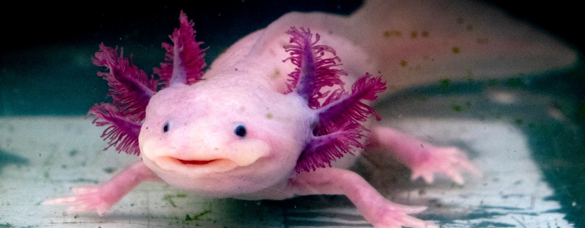
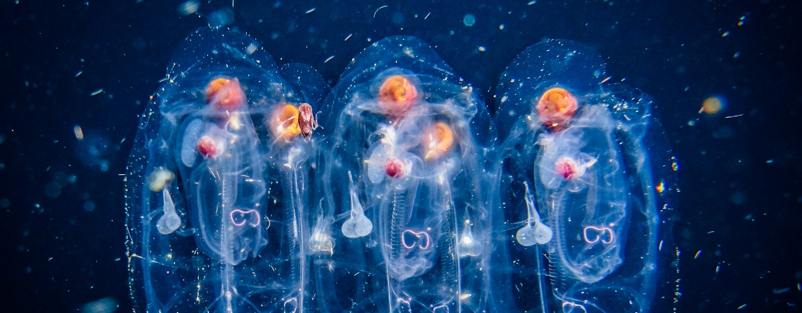
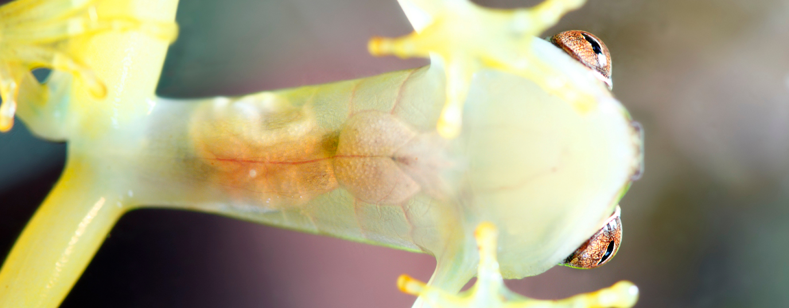

-
axolotl also known as the Mexican walking fish (Ambystoma mexicanum).
For example, it has been discovered that if an axolotl loses a limb, these amphibians are able to regenerate it in a matter of weeks, with all the bones, muscles, and nerves in the right places.
This makes the axolotl one of the most fascinating creatures on our planet.

-
A salp is neither a fish, nor a jellyfish. Phylogenetically, it forms part of a group of animals called tunicates.
Salps are hermaphrodites and their reproductive cycle is characterised by alternation of generations.
Completely harmless, these long chains of transparent organisms have a vital function.
their gigantic colonies are able to absorb a large amount of CO2 and filter it out of the ocean,
contributing to the oceanic carbon cycle, which has a significant impact on climate change.

-
This amphibian, which has been named Hyalinobatrachium yaku.
differs from other glass frogs due to the dark green spots on its head and body, as well as having a longer call with a higher frequency.
However, this creature's most remarkable feature is that it has a transparent pericardium, meaning that its heartbeat is visible through its skin.
